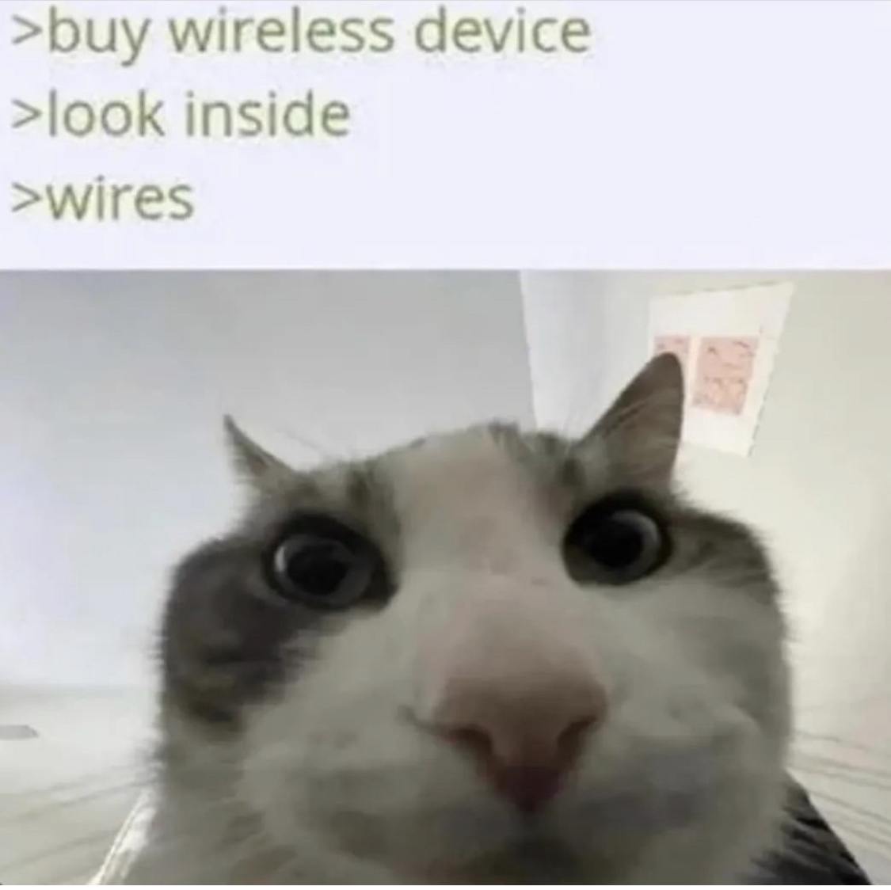

Name: Tommy Petrovski
Student Number: s3719333
Nationality: Australian/North Macedonian
Languages spoken: English, MacedonianHobby: Playing/watching Basketball.
Fun fact: I’ve gotten into 4 “car accidents” while driving, none were while driving my own car.
AFLPA Content Coordinator
This position is for a graduate content coordinator for the AFL players association (AFLPA). The position entails producing relevant and enthralling communications content set forward by the content manager and analyzing the performance/campaign results. A position such as this is very desirable as I have a keen interest in sports. Although admittedly, I am not a huge fan of AFL as a whole, just being in a sporting atmosphere can help to keep me engaged and excited about the prospect of working everyday, rather than grudgingly working on projects that I have no interest in.
As this is a graduate position, there are not many qualifications necessary in order to apply for the position. The main qualification being a degree in Marketing and communications. Although prior experience is not a requirement in order to apply for this job, it can be assumed that one with previous experience in marketing or an office environment will look more favorable for the position
As I am soon to be completing my degree in a Bachelor of Business with a Major in Marketing, the main hurdle in order to apply for this position is not an issue. Furthermore, I have had extensive workplace experience having both worked in an office environment previously in addition to working with a business with social media content creation as part of my degree.
In order to successfully obtain a position such as a Content Coordinator for the AFLPA, I will need to finish my current degree in a Bachelor of business (marketing). I currently have five subjects remaining and am currently in the process of completing four of them. Additionally, it cannot hurt to further gain knowledge of current content the AFLPA currently produces.
IT is gaining an ever increasing importance in day to day life, with almost everything having a digital aspect to it in current times. As such it is increasingly important to have a basic knowledge of IT aspects in order to understand how things work.
There was no inspiration for my interest in IT. Most of my IT knowledge to date has been dealing with basic everyday experiences one might have with things like phones and WIFI.
Too dumb for Melbourne. Convenience as the university is right next to Melbourne central which enabled me to take the train. Also had many friends applying for RMIT and Monash, but I really did not want to drive 2 hours to Clayton.
As I am in my final year of study there is not much to learn left from my current studies. However, within the scope of this class I hope to learn the basics of IT concepts such as HTML and coding which will most likely find some use within my future endeavors.
The tests indicate that I am a visual learner, in addition to being an introvert who is mostly assertive when it comes to their ideas and the effort they put into projects. The test overall is right in some areas as well as being completely wrong in others. The big five personality indicated that I am a visual learner which is true. I find it difficult to do well on an assessment where the sole method of learning was reading a bunch of notes I had taken. If I had worked through a problem with the lecturer or had received a real world example to go along with the notes, I found that I would be far likelier to recall the theory when needed. Additionally, the tests indicate that I am an introvert which is also true, however it assumes that an introverted individual will shy away from leadership roles. Which after 3 years of group work in university is untrue, If need be I will most definitely lead a group in order to ensure that work is completed in a timely manner.

The results imply that I may find it difficult to work with others within my group, assuming that I prefer to work on my own. However, I am perfectly comfortable working in a group setting, whether that be work which may be considered fun or the grueling work needed in order to ensure that the project is completed. I will look to be more vocal and ensure that the work I am completing is correct and up to par with expectations.
Ensuring that multiple different personalities are present within the team in order to allow for a large variety of ideas and perspectives are available in order to ensure that the project is as successful and impactful as possible.

The project will involve the Development of an mobile app in which the user can select a relevant university within Australia and have relevant scholarships and grants pop up based on eligibility criteria using data previously imputed by the user. The app will also have various filters in order to adjust the scope with which scholarships/grants that the user is eligible for are shown. Data imputed can be criteria such as:
Hardships experienced
GPA
Level of Study so far (eg: Undergraduate, Masters, PHD)
Women
Indiginous
International Citizen
Rural citizen
The user will also be able to select which university within Australia and its offered grants/scholarship eligibility criteria they would like to compare their data against. For the sake of time constraints, the project will begin with RMIT as its sole source of scholarship data. The app itself will be created using Github and HTML.
Every single University within Australia offers numerous grants and scholarships to multiple applicants each year. Due to the large amounts of scholarships/grants on offer, it can be difficult and exhausting for an individual to find if they are eligible. The project will offer a single database in which users can research whether they are eligible for certain scholarships and grants without having to do extensive research.
The software will be developed on a PC using Github as well as using HTML and CSS in order to develop the app. Data required for the app will be sourced from the university and their scholarship eligibility criteria. CSS will be used to create the presentation of the project and will be written in HTML. Additionally, a mobile phone will be required in order to test the final end product in order to ensure that everything is working as intended. A subscription to the education edition of Github will also be required.
In order to successfully complete the project, it is required that the members undertaking the project are knowledgeable in the use of CSS as well as being able to use HTML as the markup language used in the presentation of the app. Github will be used and will require a subscription to the education edition of the software. Assuming the members undertaking the project are all RMIT students, it is feasible for the members to apply for the education edition using their university credentials. Additionally, members can undertake CSS and HTML crash courses in order to sufficiently understand how to develop the project.
If the project is successful, an app will be created with which the user can input criteria that they satisfy. Afterwards, the user can then search for scholarships and grants that they are eligible to apply for. Thus solving the problem of having to individually search for a scholarship/grant, find the eligibility criteria and then identify whether or not they are eligible to apply. If successful, the project will offer a single database in which users can research whether they are eligible for certain scholarships and grants without having to do extensive research.
Thank You for reading MyProfile, Enjoy this photo :)
